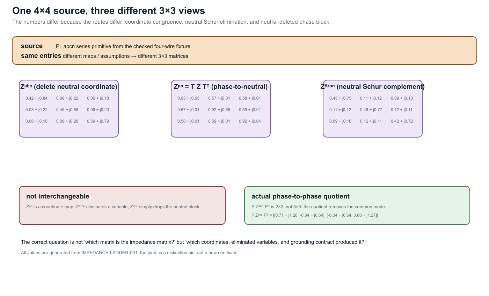

Circuit coordinate transformations: phase-to-neutral and phase-to-phase
Page status: guarded transformation definitions with executable witnesses.
Why these are transformations, not graph deletions
The attached four-wire and three-wire manuscripts make an important distinction explicit: reducing the number of voltage variables can be a change of electrical coordinates, an elimination of an unobservable mode, or an approximation that discards a physical return path. These are not the same operation as deleting a neutral vertex from a graph.
The source model in this book retains ordered conductor terminals and factors. The transformations below are maps on terminal variables and currents, with a separate statement of exactness, recovery, and what is no longer observable.
A three-variable target is not automatically a three-wire physical model. It may be a phase-to-neutral coordinate realization of a four-wire factor, a phase-to-phase quotient of a three-wire factor, or a Kron-reduced boundary relation. The target type and discarded mode must be named.
Two reductions that are often conflated
For a phase/neutral partition of a nodal impedance or admittance relation, neutral elimination and a phase-to-neutral coordinate map are different operations. Writing the impedance in blocks,
\[\mathbf Z_{abc,n}= \begin{bmatrix} \mathbf Z_{pp}&\mathbf Z_{pn}\\ \mathbf Z_{np}&\mathbf Z_{nn} \end{bmatrix},\]
the Schur-complement reduction is
\[\boxed{\mathbf Z_{abc}^{\mathrm{Kron}} =\mathbf Z_{pp}-\mathbf Z_{pn}\mathbf Z_{nn}^{-1}\mathbf Z_{np}}.\]
It eliminates a declared neutral variable and requires $\mathbf Z_{nn}$ to be invertible. By contrast, the phase-to-neutral map changes the voltage coordinates and lifts currents on a declared zero-sum subspace:
\[\boxed{\mathbf Z^{\mathrm{pn}} =\mathbf T\mathbf Z_{abc,n}\mathbf T^{\mathsf T}}, \qquad \mathbf T=\begin{bmatrix}1&0&0&-1\\0&1&0&-1\\0&0&1&-1\end{bmatrix}.\]
The latter does not assert that the neutral voltage is zero or that a physical neutral conductor has been removed. The two expressions agree only under additional grounding, shunt, and current-subspace assumptions, together with a declared recovery map. A numerical example should therefore report which formula was evaluated, the grounding convention, the invertibility condition, and the residual of the discarded mode.

The plate is deliberately not a catalogue of interchangeable impedance matrices. $Z^{\mathrm{pn}}$ is a phase-to-neutral coordinate congruence, $Z^{\mathrm{Kron}}$ eliminates the neutral block, and $Z^{abc}$ is merely the neutral-deleted phase block. The actual phase-to-phase quotient is shown as a 2×2 inset because the common-mode quotient removes one dimension. This distinction is the practical reason to record the route, grounding contract, and discarded mode alongside every exported matrix.
Four-wire phase-to-neutral transformation
Let the phase-to-ground voltage vector at bus $i$ be
\[\mathbf U_i= \begin{bmatrix}U_{i,a}&U_{i,b}&U_{i,c}&U_{i,n}\end{bmatrix}^{\mathsf T}.\]
Define the phase-to-neutral map
\[\mathbf U_i^{\mathrm{pn}}=\mathbf T\mathbf U_i, \qquad \mathbf T= \begin{bmatrix} 1&0&0&-1\\ 0&1&0&-1\\ 0&0&1&-1 \end{bmatrix}.\]
For a four-wire line with total current $\mathbf I_{\ell ij}$, series current $\mathbf I^{\mathrm s}_{\ell ij}$, and shunt current $\mathbf I^{\mathrm{sh}}_{\ell ij}$,
\[\mathbf I_{\ell ij} =\mathbf I^{\mathrm s}_{\ell ij}+\mathbf I^{\mathrm{sh}}_{\ell ij}.\]
When the shunt contribution can be neglected for the declared study, the neutral current is determined by the phase currents under the zero-ground injection condition:
\[I_{\ell ij,n}=-(I_{\ell ij,a}+I_{\ell ij,b}+I_{\ell ij,c}).\]
The current map is therefore
\[\mathbf I_{\ell ij} =\mathbf T^{\mathsf T}\mathbf I_{\ell ij}^{\mathrm{pn}}, \qquad \mathbf I_{\ell ij}^{\mathrm{pn}} =\begin{bmatrix}I_{\ell ij,a}&I_{\ell ij,b}&I_{\ell ij,c}\end{bmatrix}^{\mathsf T}.\]
For a full four-by-four series impedance $\mathbf Z_\ell^{\mathrm s}$, left-multiplication by $\mathbf T$ gives the transformed series relation
\[\mathbf U_j^{\mathrm{pn}} =\mathbf U_i^{\mathrm{pn}} -\underbrace{\mathbf T\mathbf Z_\ell^{\mathrm s}\mathbf T^{\mathsf T}}_{\mathbf Z_{\ell}^{\mathrm{pn}}} \mathbf I_{\ell ij}^{\mathrm{pn}}.\]
This is a congruence transformation on the declared zero-sum current subspace, not a claim that the neutral conductor has zero voltage everywhere. A neutral voltage recovery map can be retained separately when the topology and grounding conditions make it unique.
Exactness contract
The phase-to-neutral target is exact for the full four-wire equations under the following sufficient conditions, matching the attached computational study [39]:
- line shunt admittances to ground are zero or explicitly retained in a representable transformed factor;
- connected devices inject negligible current into ground except at declared grounding factors;
- each continuous neutral section has at most one ideal earth reference; and
- the recovery traversal encounters no disconnected or multiply grounded neutral component.
Under these guards, phase-to-neutral voltages, phase currents, terminal powers of zero-sequence-free devices, and series losses can be recovered exactly. The neutral-to-ground voltage and neutral-to-earth limits are not represented by the three voltage variables alone; they require the recovery map and retained grounding data.
With sparse grounding, line charging, or multiple grounding points, the same map can still be a useful approximation, but the discarded earth-coupled current must be named and bounded. A small voltage error in a sample is not a general decision-preservation theorem.
Eliminating the neutral can remove voltage-to-ground limits, grounding decisions, fault paths, and protection observations even when the phase-to-neutral power flow looks accurate. Keep the source factor and a recovery map if any of those questions remain in scope.
Three-wire phase-to-phase reduction
For an electrically isolated three-wire section, let
\[\mathbf U_i=\begin{bmatrix}U_{i,a}&U_{i,b}&U_{i,c}\end{bmatrix}^{\mathsf T}, \qquad \mathbf U_i^{\mathrm{pp}}=\mathbf P\mathbf U_i, \qquad \mathbf P= \begin{bmatrix}1&-1&0\\0&1&-1\end{bmatrix}.\]
The kernel of $\mathbf P$ is $\operatorname{span}(\mathbf 1)$. The phase-to-phase target therefore removes the common-mode voltage, while its transpose maps reduced currents into the zero-sum subspace:
\[\mathbf I_{\ell ij}=\mathbf P^{\mathsf T}\boldsymbol\gamma_{\ell ij}, \qquad \mathbf Z_{\ell}^{\mathrm{pp}} =\mathbf P\mathbf Z_\ell^{\mathrm s}\mathbf P^{\mathsf T}.\]
Every full current satisfying $\mathbf 1^{\mathsf T}\mathbf I_{\ell ij}=0$ has a unique reduced current $\boldsymbol\gamma_{\ell ij}$. The coordinate choice may instead be Clarke $\alpha\beta$ or positive/negative sequence; these are bases of the same two-dimensional quotient space. A fixed sequence basis diagonalizes only when the line matrices have the required transposed or circulant structure. It is not a generic decoupling of an untransposed, coupled feeder.
Exactness and the radiality guard
The attached three-wire reduction manuscript proves a useful sufficient condition: a galvanically isolated three-wire section with zero-sum device injections, no line shunts to earth, and at most one ideal earth reference is exact when its active section graph is a tree. The tree condition forces the common-mode current to vanish by induction from the leaves. It is therefore a topological guard on the active member graph, not a synonym for a radial simple projection.
When the section is meshed, multiply grounded, or earth-coupled, write the current as
\[\mathbf I_{\ell ij} =\mathbf P^{\mathsf T}\boldsymbol\gamma_{\ell ij} +\kappa_{\ell ij}\mathbf 1.\]
The reduced voltage equation then has a residual of the form
\[\mathbf U_j^{\mathrm{pp}} =\mathbf U_i^{\mathrm{pp}} -\mathbf Z_{\ell}^{\mathrm{pp}}\boldsymbol\gamma_{\ell ij} -\mathbf P\mathbf Z_\ell^{\mathrm s}\mathbf 1\,\kappa_{\ell ij}.\]
The factor $\|\mathbf P\mathbf Z_\ell^{\mathrm s}\mathbf 1\|$ is a useful line-level sensitivity indicator, but it bounds an equation residual, not the solution or decision error by itself. The missing common-mode coordinate also prevents recovering phase-to-ground voltages without additional information.
The exactness theorem uses a tree of active identified members. A simple graph can be radial while parallel member identity creates a two-edge cycle, and an asset inventory can be meshed while an active state is a tree.
How these transformations fit the book
| Transformation | Primary operation | Exactness guard | Typical loss |
|---|---|---|---|
| phase-to-neutral $\mathbf T$ | terminal-coordinate map plus current recovery | zero or represented shunts, sparse compatible grounding | ground-referenced quantities if recovery is omitted |
| phase-to-phase $\mathbf P$ | quotient by common-mode voltage and zero-sum current lift | active member tree, zero-sum injections, limited grounding | common-mode voltage/current and earth-return effects |
| neutral Kron reduction $\mathcal K$ | Schur complement of a declared neutral block | invertible neutral block and retained boundary relation | neutral state and source member constraints unless recovered |
| generic Kron | elimination of internal variables | invertible internal block and declared observations | assets, limits, switching, and decisions unless mapped |
The first two rows are coordinate or quotient transformations on conductor spaces. Kron is an elimination of a model block. They may compose, but only after their terminal maps, grounding scope, and recovery contracts have been made explicit. A diagram that shows fewer conductors is not enough evidence to classify the operation.
Executable and research status
The book already has exact conductor-coordinate and transformer-coordinate certificates. The next implementation should add a typed four-wire phase-to-neutral certificate and a three-wire phase-to-phase certificate with positive, mesh, shunt, and grounding guard rejections. The active-state radiality witness now provides the first executable topology guard.